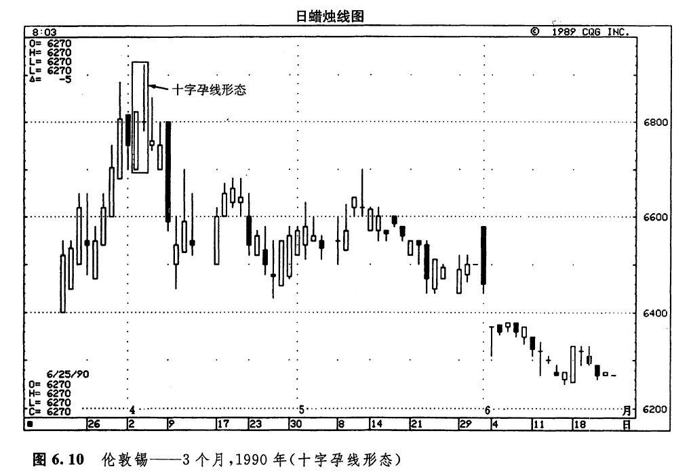
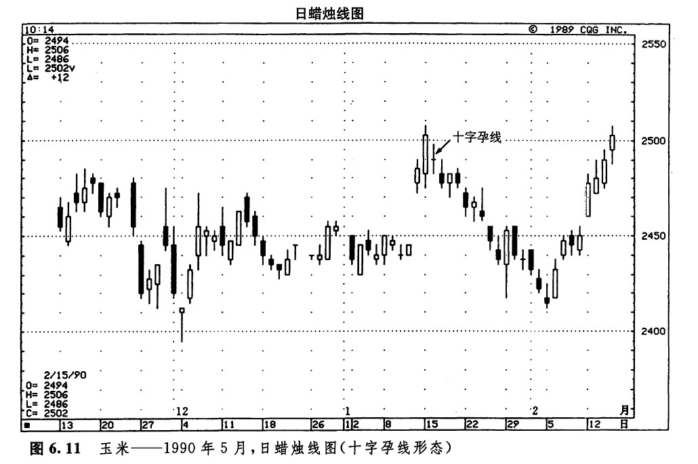
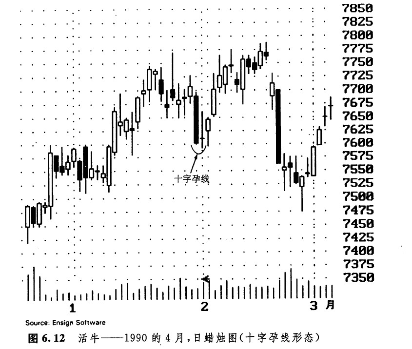

在常规的孕线形态中，前一根为高高的实体，后一根为小小的实体。不过，到底什么样的蜡烛线算得上“小”实体，并无一定之规。这一点与其他许多图表分析技术一样，具有主观性。作为一条普遍的经验，在孕线形态中，第二根实体越小，则整个形态越有力量。这条经验通常都是成立的，因为第二个实体越小，市场的矛盾心态就越甚，所以，越有可能酿成趋势反转。在极端的情况下，随着第二根蜡烛线的开市价与收市价之间的距离的收窄，这个实体越来越小，最后就形成了一根十字线。
我们曾经提到，如果在一根十字线之前有一根长长的实体，则构成了十字孕线形态。十宇孕线形态所蕴含的技术意义，比普通的孕线形态重要得多。一般的孕线形态并不属于主要反转形态，但是，十字孕线形态恰恰是一种主要反转形态。一旦在一根很长的白色蜡烛线之后出现了一根十字孕线，如果多头交易商对这个形态视而不见的话，他就把自己推到了危险的境地。十字孕线形态也可能引发底部过程，不过，当这类形态出现在市场顶部时更有效力。
如图6.10所示，自3月中开始曾经有一轮上涨行情，但是当4月2日和3日形成的十字孕线形态出现后，这个上升趋势就遮然终止了。请注意上述演变过程是如何发生的。在图6.11中，1月中旬出现了一个巨大的向上价格跳空，它似乎在大喊：“牛市！”但是，图示的孕线形态宣布：“牛市到此结束。”图6.12显示，由一根不同寻常的巨大黑色蜡烛线，与它身后的一根十字线一起，组成了一个十字孕线形态。在本图中我们看到，从这个形态开始，市场从之前的下降趋势中挣脱出来。在这个十字孕线形态的十字线的后面，还有一根外形与锤子线相像的蜡烛线（这根蜡烛线成功地向下试探了市场最近形成的低点），这根蜡烛线给出了当前底部形态的进一步证据。



下一篇：平头顶部形态和平头底部形态
上一篇：孕线形态